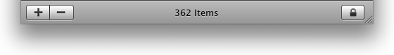

com.explodingpixels.macwidgets.BottomBar
com.explodingpixels.macwidgets.BottomBar
|
|||||||||
| PREV CLASS NEXT CLASS | FRAMES NO FRAMES | ||||||||
| SUMMARY: NESTED | FIELD | CONSTR | METHOD | DETAIL: FIELD | CONSTR | METHOD | ||||||||
java.lang.Object
public class BottomBar
A Mac style Bottom Bar. For a full descrption of what a Bottom Bar is, see the
Bottom Bars
section of Apple's Human Interface Guidelines. Here's an example of what this method cretes:

Here's a simple example that creates a Bottom Bar:
BottomBar bottomBar = BottomBar(BottomBarSize.LARGE);
bottomBar.addComponentToCenter(MacWidgetFactory.createEmphasizedLabel("My Label"));
| Constructor Summary | |
|---|---|
BottomBar(BottomBarSize size)
Creates a BottomBar of the given size. |
|
| Method Summary | |
|---|---|
void |
addComponentToCenter(JComponent toolToAdd)
Adds the given component to the side of this BottomBar. |
void |
addComponentToCenter(JComponent toolToAdd,
int spacer_pixels)
Adds the given component to the center of this BottomBar. |
void |
addComponentToLeft(JComponent toolToAdd)
Adds the given component to the left side of this BottomBar. |
void |
addComponentToLeft(JComponent toolToAdd,
int spacer_pixels)
Adds the given component to the left side of this BottomBar followed by the
given an empty space of the given pixel width. |
void |
addComponentToRight(JComponent toolToAdd)
Adds the given component to the right side of this BottomBar. |
void |
addComponentToRight(JComponent toolToAdd,
int spacer_pixels)
Adds the given component to the right side of this BottomBar. |
JComponent |
getComponent()
Gets the user interface component representing this BottomBar. |
void |
installWindowDraggerOnWindow(Window window)
Installs a drag listener on this BottomBar such that if it is dragged, it will
move the given Window. |
| Methods inherited from class java.lang.Object |
|---|
clone, equals, finalize, getClass, hashCode, notify, notifyAll, toString, wait, wait, wait |
| Constructor Detail |
|---|
public BottomBar(BottomBarSize size)
BottomBar of the given size.
size - the height of the BottomBar.| Method Detail |
|---|
public void addComponentToLeft(JComponent toolToAdd)
BottomBar.
toolToAdd - the tool to add to this BottomBar.
public void addComponentToLeft(JComponent toolToAdd,
int spacer_pixels)
BottomBar followed by the
given an empty space of the given pixel width.
toolToAdd - the tool to add to this BottomBar.spacer_pixels - the amount of space to post-pend the added component with.public void addComponentToCenter(JComponent toolToAdd)
BottomBar.
toolToAdd - the tool to add to this BottomBar.
public void addComponentToCenter(JComponent toolToAdd,
int spacer_pixels)
BottomBar. If this is not the
first component to be added to the center, then the given component will be preceeded by a
space of the given width.
toolToAdd - the tool to add to this BottomBar.spacer_pixels - the amount of space to pre-pend the added component with *if* the given
component is *not* the first component to be added to the center.public void addComponentToRight(JComponent toolToAdd)
BottomBar.
toolToAdd - the tool to add to this BottomBar.
public void addComponentToRight(JComponent toolToAdd,
int spacer_pixels)
BottomBar. If this is not
the first component to be added to the right, then the given component will be followed by a
space of the given width.
toolToAdd - the tool to add to this BottomBar.spacer_pixels - the amount of space to post-pend the added component with *if* the given
component is *not* the first component to be added to the center.public void installWindowDraggerOnWindow(Window window)
BottomBar such that if it is dragged, it will
move the given Window.
window - the Window to move when the this BottomBar is dragged.public JComponent getComponent()
BottomBar. The returned
JComponent should be added to a container that will be displayed.
BottomBar.
|
|||||||||
| PREV CLASS NEXT CLASS | FRAMES NO FRAMES | ||||||||
| SUMMARY: NESTED | FIELD | CONSTR | METHOD | DETAIL: FIELD | CONSTR | METHOD | ||||||||